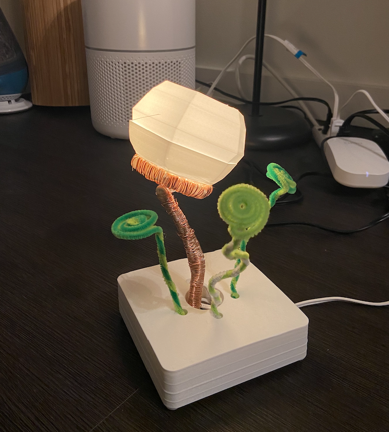
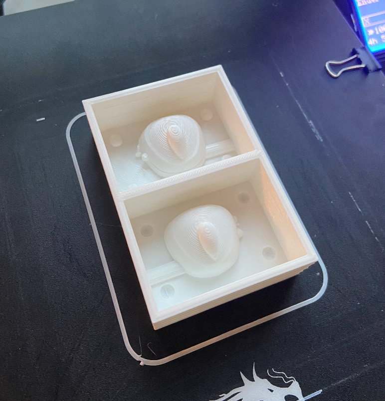
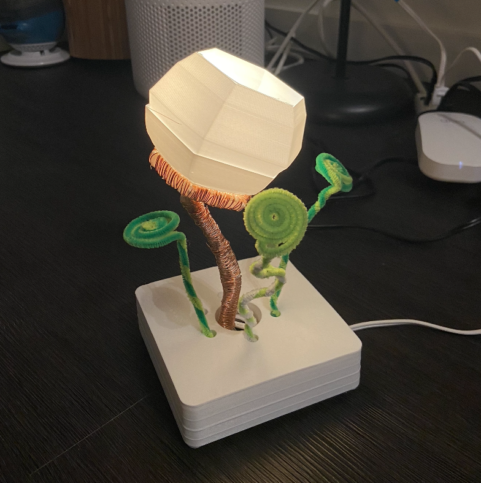

|

|

|
Here is my design from Lamp Part 1 last week. I made some changes to my design throughout the week due to print time and adhesion difficulties.
I got my light fixture in the mail, so first I wanted to print out the lamp shade in the real size to make sure my light fixture and light bulb would fit.
I resized my lampshade model to accommodate my light bulb innards, and printed it. The first print turned out so badly. I made the thickness of the walls 0.4mm and used the spiralized outer contour option in Cura; however, some of the walls messed up. I printed the lampshade again but tried to make it thicker. It was slightly better but the walls were still messed up similar to the previous print. The lamp shade took abour 4-5 hours to print.
Next, I needed to print the pot and base of my lamp, which was initially a circle shape. It was going to take about 17-20 hours to print, which I thought was ridiculous, so I sized down the pot and made it thinner. When I started printing it, the adhesion was not great and it messed up about 3 times.
I decided to switch to a square shape because I felt that would be easier to adhere and have less of a chance of messing up. It worked great. I don’t think my prints have turned out so nice before. It still took 15 hours to print, and while I slept the extruder kept going higher while not printing. I think this may have been because my filament doesn't roll smoothly when printing. I have to unroll it manually once it gets tight. My base wasn't finished but I thought it turned out better.
I needed to figured how to put my lamp parts together, so I had _ parts: the base, the lampshade, the lamp innards, and the lampshade holder. The lampshade holder was the support that printed when I printed the lampshade. I thought it would be good to use because it supported the lampshade while keeping the lamp innards in place.
I wanted to make it look different from the lampshade and more like a flower, so I wrapped copper wire around it. I also wrapped copper wire around the lamp fixture cord to make it stand up. I tried this a few times to create more strength and thickness around the cords.
Then I actually glued my lampshape to the lampshade support to make it stay, and I can still install and remove the lightbulb.
Then I put all the parts together and here is my final lamp! I ended up using pipe cleaners to mimic the leaves of a flower. They look a bit tacky but they get the job done. If I were to redo this part, I would use copper wire for the leaves to make it match the stem.
|
|

|
For my molding and casting assignment, I had to wrap my head around the mold of mold concept first. Initially I thought we were creating a mold for the plaster, but no. We need to create a 3D master shape first, then create a mold to pour our silicone into later, then pour plaster into the silicone mold. So I not only had to create the 3D shape in Rhino first, then split them in half (positive side) for the two part mold, but also I had to put boxes around it to hold the silicone.
I decided to go with a dog head figure. I made it round so it would be easy to cast the figure. I created curves in Rhino, revolved them to get the head and hears, and I BooleanUnion-ed all the parts together, and I got this!
I used DraftAngleAnalysis to see the blue and red ratio of the figure and it looked pretty good.
Then I proceeded to create the molds for my shape in Rhino. I actually made a big mistake at first because I created the negatives for the figure, and I later realized I had to create the positives, so I could make the mold of a mold. To do this, I used my figure and Boolean Union-ed each half with a rectangular prism like so. As for the keys, I did the same with spheres on one side, and on the other side, I used BooleanDifference to create a negative of the sphere. After, I created walls for the model so the silicone can easily sit in the mold of a mold.
The mold printing went smoothly but for some reason, one of the layers was skipped so I filled it with glue. It took around 5 hours to print.